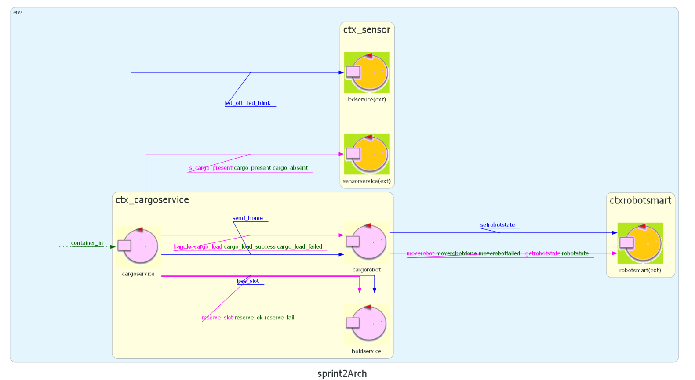
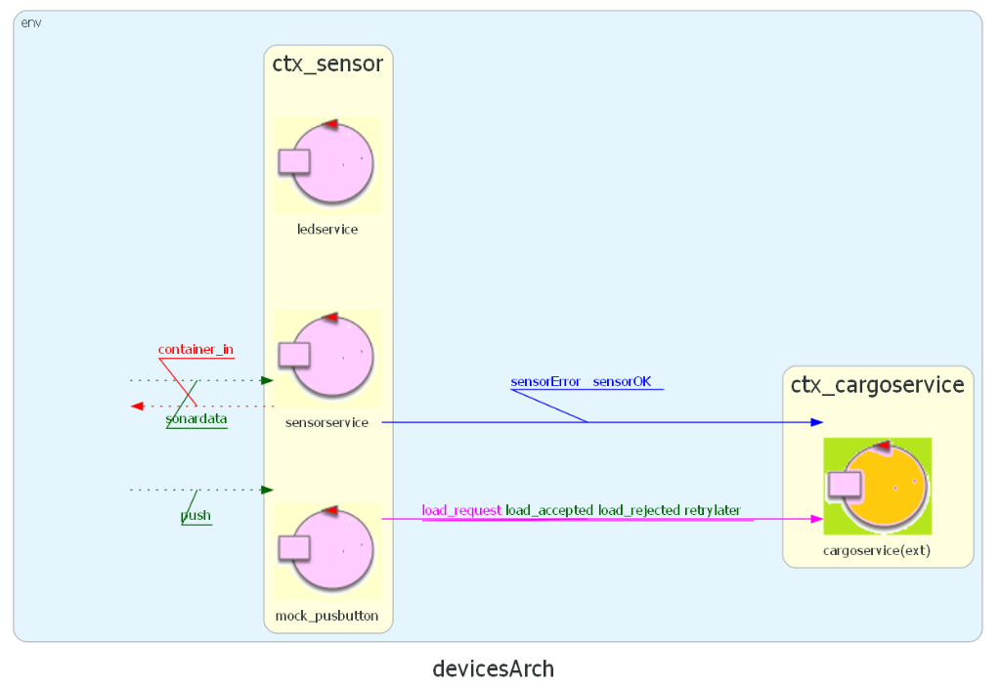

Punto di partenza
Nello Sprint 2, grazie
all'analisi del problema e alla relativa implementazione, abbiamo realizzato le componenti hardware
richieste, ovvero il sensor e il led, che comunicano attraverso messaggi con
cargoservice. Per esigenze di testing, anche il pushbutton era implementato a livello
hardware, nel contesto ctx_sensor. Di seguito l'architettura prodotta alla fine dello Sprint 2,
includendo entrambi i contesti sviluppati ctx_cargoservice e ctx_sensor.


Goal
In questo sprint svolgiamo l'analisi del problema e l'implementazione dei componenti
pushbutton e display, che, come precisato dal committente, sono rappresentati in
un'interfaccia web (che chiameremo WebGUI), su un nodo separato sia dal nodo che ospita
cargoservice, sia dal nodo di bordo del cargorobot, sia dal Raspberry Pi che ospita
sensorservice. In particolare, al termine dello Sprint 3 il sistema dovrà essere in grado di
mostrare sulla WebGUI:
- il pushbutton per inviare la richiesta di carico;
- lo stato del sistema, ossia se si trova nello stato ENGAGED, DISENGAGED o
OUT_OF_SERVICE;
- la risposta alla richiesta di carico;
- l'occupazione dei 4 slot (libero o occupato).
Analisi dei Requisiti
L'analisi dei requisiti è stata svolta durante lo Sprint 0, producendo un approfondito
documento di analisi dei requisiti.
Analisi del Problema
WebGUI
Per realizzare una WebGUI in grado di soddisfare i requisiti, è necessario scegliere un framework che ci permetta di
comunicare agevolmente con il resto del nostro sistema. Per tenere al minimo il boilerplate, potremmo scegliere
di usare puro HTML con un semplice script JavaScript, ma questo richiederebbe un'implementazione lunga e complessa della comunicazione
via MQTT. Perciò, scegliamo di usare Node.js con il framework
Express per la creazione del web server, dato che offre una libreria MQTT matura e pronta all'uso,
oltre che per la semplicità nel servire la pagina HTML ai client.
Dai requisiti abbiamo individuato quattro elementi che saranno presenti nella pagina web:
- Un bottone utilizzato per inviare le richieste di carico.
- Un display per i messaggi di risposta alle richieste di carico.
- Un display testuale per lo stato attuale del sistema.
- Una sezione che rappresenti lo stato di occupazione degli slot.
I topic MQTT di cui abbiamo bisogno sono i seguenti:
Dal punto di vista della comunicazione MQTT tra sistema QAK e web server, abbiamo bisogno di
differenziare i tre tipi di informazione in uscita dal sistema. Potremmo usare un canale unico
e classificare i messaggi a runtime, ma questo introdurrebbe logica fragile (euristiche sul
contenuto) nel web server. Preferiamo invece usare un topic dedicato per ciascun tipo: così il
server instrada per topic, senza ispezionare il payload.
- pushbutton: web → QAK. Il web server pubblica qui gli eventi di pressione del pulsante.
- holdstatusrequest: web → QAK. Il web server pubblica qui le richieste di aggiornamento
stato slot, intercettate da holdstatusservice.
- display: QAK → web. Canale per le risposte testuali alle richieste di carico
(slot1…slot4, no_slots_avail, already_occupied,
out_of_service, not_arrived).
- state: QAK → web. Canale dedicato agli aggiornamenti di stato del sistema
(DISENGAGED, ENGAGED, OUT_OF_SERVICE).
- holdstatus: QAK → web. Canale dedicato all'occupazione degli slot
(stringa binaria, es. "0110").
Per la comunicazione tra il web server e il browser utilizziamo
Server-Sent Events (SSE):
il browser si iscrive all'endpoint /events e riceve aggiornamenti in push ogni volta che il
server riceve un messaggio MQTT rilevante. Questo approccio evita il polling e mantiene la pagina
sempre aggiornata in tempo reale.
In ottica di separazione delle responsabilità, riteniamo necessario creare dei servizi dedicati
che implementino la logica legata al funzionamento di questi componenti, all'interno di un nuovo
contesto QAK ctx_ioport: pushbuttonservice, displayservice,
stateservice e holdstatusservice.
pushbuttonservice
Questo attore implementa la logica legata all'invio della richiesta di carico e alla ricezione della
risposta. pushbuttonservice si iscrive al topic MQTT pushbutton, intercetta gli
eventi di pressione del bottone, e invia una Request load_request a cargoservice,
innescando la procedura di core business implementata nello
Sprint 1.
Si mette quindi in attesa di Reply, che può essere:
- load_accepted(SLOT): la richiesta è accettata; il payload contiene il nome dello slot
prenotato (es. slot2);
- load_rejected(no_slots_avail): la richiesta è rifiutata perché la hold è piena;
- retrylater(already_occupied): la IOPort è già occupata da un cargo;
- retrylater(out_of_service): il sistema è in stato OUT_OF_SERVICE.
In tutti i casi, pushbuttonservice estrae il payload della Reply con payloadArg(0)
e lo emette come evento interno QAK display, affidando a displayservice l'inoltro
verso la WebGUI.
displayservice
Definiamo un evento interno QAK display(MSG) come punto di accesso unificato per i
messaggi testuali diretti alla WebGUI. Chiunque voglia notificare un esito testuale emette questo
evento; displayservice lo intercetta e lo pubblica sul topic MQTT display.
Sul topic display transitano quindi solo le risposte alle richieste di carico
(slot1…slot4, no_slots_avail, already_occupied,
out_of_service) e la notifica di timeout cargo (not_arrived), quest'ultima
emessa direttamente da cargoservice via evento cross-context.
stateservice
Analogamente a displayservice, definiamo un evento interno QAK system_state(STATE)
per i cambi di stato del sistema. cargoservice emette questo evento ad ogni transizione di
stato (DISENGAGED, ENGAGED, OUT_OF_SERVICE); stateservice, in
ascolto nel contesto ctx_ioport, lo intercetta e pubblica sul topic MQTT dedicato
state. La separazione su topic distinto evita qualsiasi logica di classificazione lato
web server: il topic stesso identifica il tipo di messaggio.
holdstatusservice
Ci siamo chiesti come gestire l'aggiornamento dello stato di occupazione degli slot sulla WebGUI.
La soluzione più semplice sarebbe stata comandare aggiornamenti sincroni direttamente da
cargoservice in punti specifici dell'esecuzione. Abbiamo però ritenuto questo approccio
poco robusto, non responsivo a errori durante la movimentazione, e in contrasto con il principio di
separazione delle responsabilità, in quanto avrebbe introdotto logica di presentazione nel core business.
Abbiamo quindi creato l'attore holdstatusservice, all'interno del contesto ctx_ioport,
con l'unica responsabilità di richiedere aggiornamenti sullo stato della hold su sollecitazione.
holdstatusservice si iscrive al topic MQTT holdstatusrequest e, ogni volta che
riceve un messaggio su quel topic, invia a holdservice una Request get_hold_status.
holdservice risponde con hold_status(S), dove S è una stringa di caratteri
binari che rappresenta lo stato aggiornato di ciascun slot (1 occupato, 0 libero).
L'aggiornamento viene pubblicato direttamente sul topic MQTT dedicato holdstatus,
senza passare per displayservice, dato che si tratta di un tipo di dato strutturalmente
diverso dagli altri messaggi testuali.
Sul lato web, il server pubblica automaticamente su holdstatusrequest nei seguenti momenti:
- alla prima connessione al broker MQTT, per ottenere lo stato iniziale;
- 1,5 secondi dopo aver ricevuto qualsiasi risposta testuale (carico accettato, rifiutato, etc.),
per riflettere tempestivamente la variazione della hold.
Architettura
Di seguito illustriamo l'architettura QAK prodotta al termine dello Sprint 3, con il nuovo contesto
ctx_ioport che ospita pushbuttonservice, displayservice,
stateservice e holdstatusservice. Per una visione d'insieme dell'architettura finale prototipale, si rimanda
all'architettura prodotta
nello Sprint 0.
 and Francesco Roffia
and Francesco Roffia  GIT repo: https://github.com/FRoffia/ISS_26_Cargoservice
GIT repo: https://github.com/FRoffia/ISS_26_Cargoservice